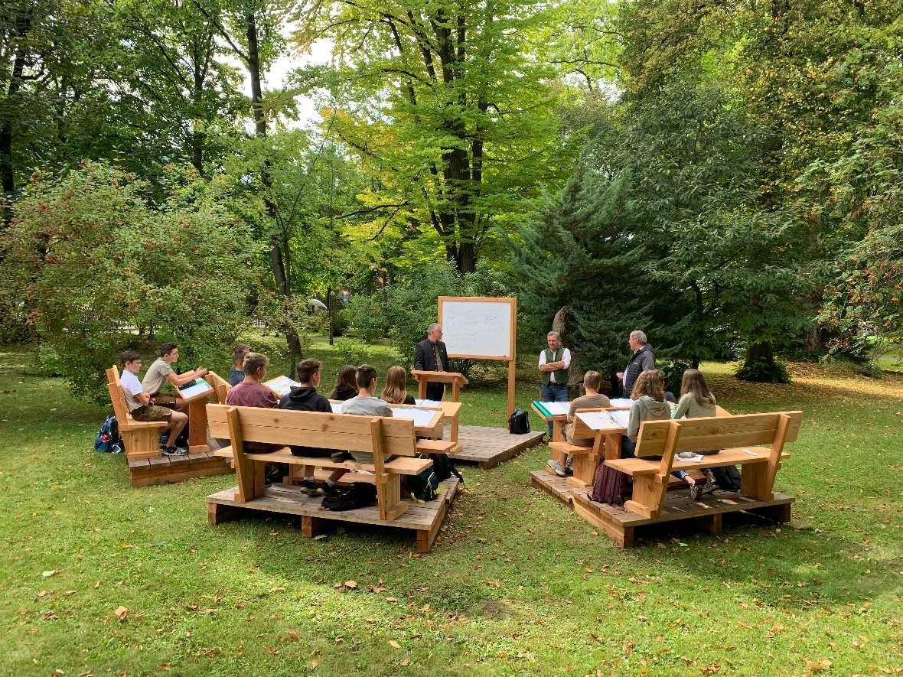

Pertanian
12 Okt 2023
Pemberdayaan Petani Milenial di Wilayah Indonesia Timur
Program edukasi teknologi modern bagi petani muda untuk meningkatkan produktivitas lahan gambut secara berkelanjutan.
Baca Selengkapnya chevron_right
Informasi terkini mengenai inovasi, operasional, dan kontribusi PT Agrinas Pangan Nusantara dalam membangun kedaulatan pangan nasional.

Agrinas memperkenalkan sistem rantai pasok cerdas berbasis AI untuk memangkas inefisiensi logistik dari petani ke konsumen akhir, memastikan harga stabil dan kualitas terjaga.
Program edukasi teknologi modern bagi petani muda untuk meningkatkan produktivitas lahan gambut secara berkelanjutan.
Baca Selengkapnya chevron_right
Melalui integrasi data pergudangan dan transportasi, Agrinas berhasil menekan biaya operasional distribusi nasional.
Baca Selengkapnya chevron_right
Menerapkan panel surya untuk sistem pompa air guna mendukung kemandirian energi bagi kelompok tani lokal.
Baca Selengkapnya chevron_right
Hasil panen meningkat 20% dibandingkan musim lalu berkat implementasi pupuk presisi berbasis pemetaan tanah.
Baca Selengkapnya chevron_right
Agrinas meraih penghargaan Zero Accident di sektor distribusi pangan tingkat nasional tahun 2023.
Baca Selengkapnya chevron_right
Menghubungkan produsen langsung dengan pasar ritel, memangkas rantai tengkulak yang merugikan petani.
Baca Selengkapnya chevron_rightKumpulan momen berharga dalam operasional, kemitraan, dan kontribusi sosial kami di seluruh nusantara.